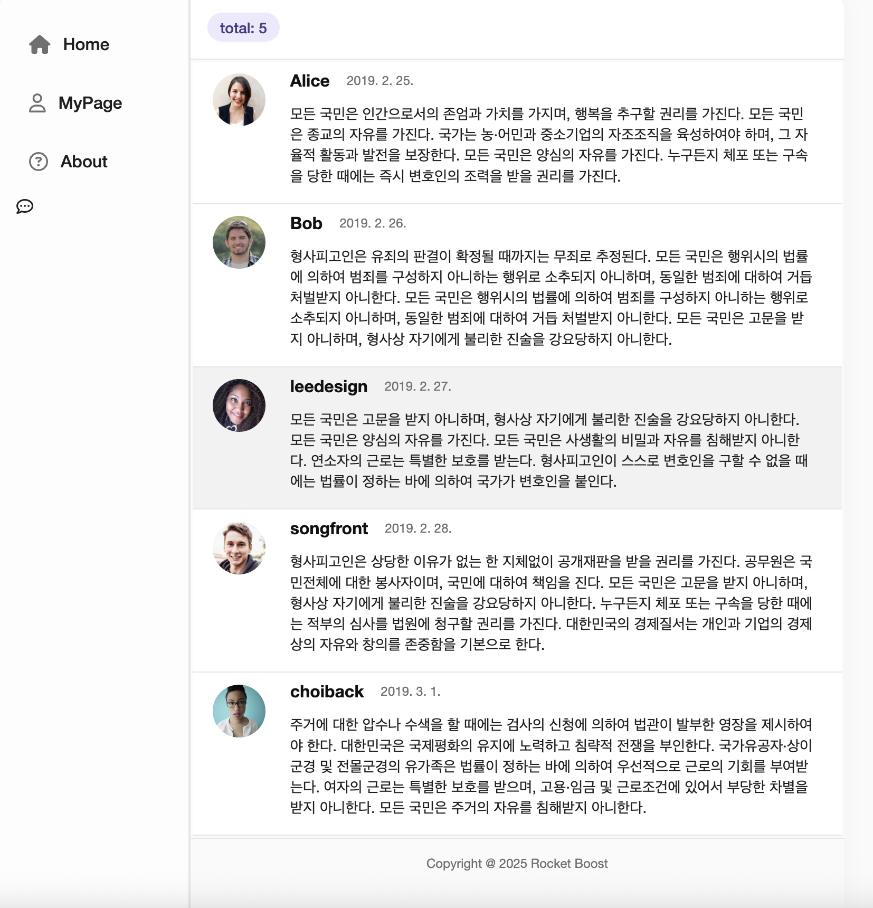
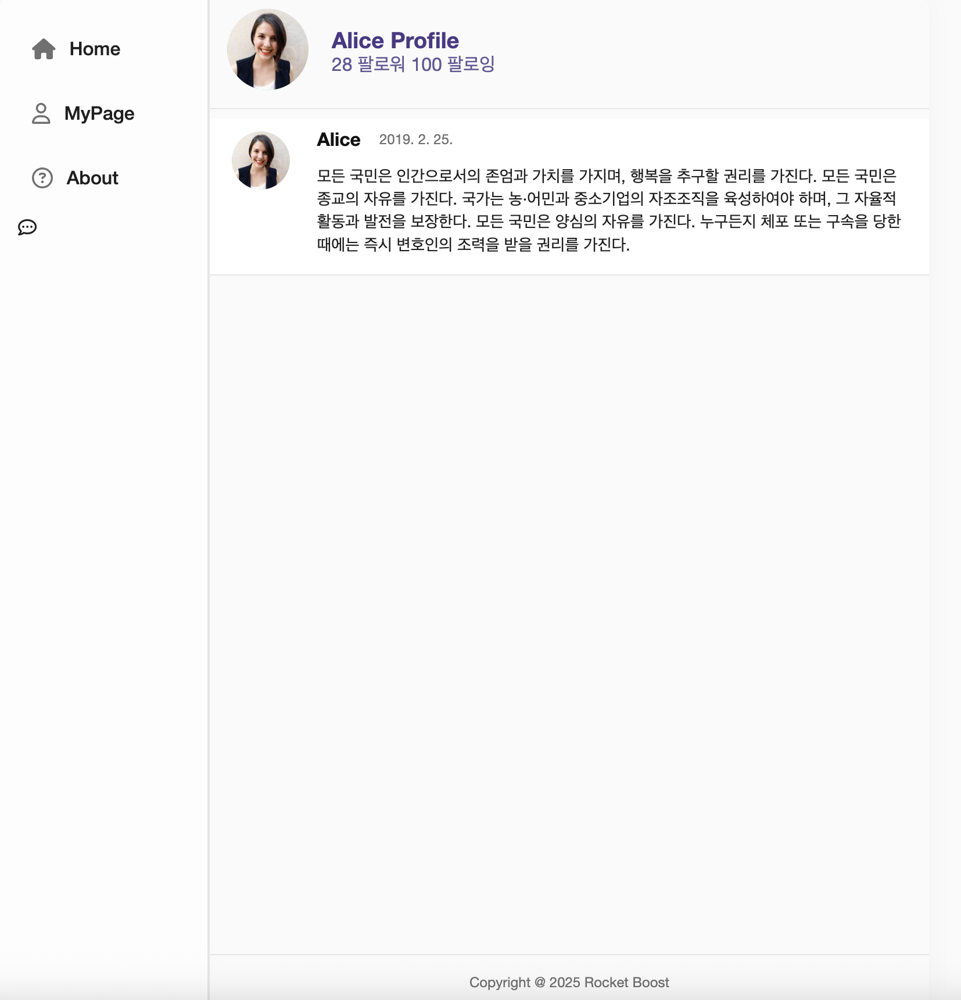

1. SPA란?
SPA(Single Page Application)는 하나의 HTML 파일 안에서 동적으로 화면을 바꾸는 방식이다. 전체 페이지를 새로 불러오는 것이 아니라, 서버로부터 필요한 데이터만 가져와서 UI 일부만 갱신한다.
- 페이지 전환 속도가 빠르고 부드러움
- React와 같은 프론트엔드 프레임워크에서 자주 사용됨
- 라우팅 구현이 필수
2. React Router란?
React는 기본적으로 페이지 이동(라우팅)을 지원하지 않기 때문에 react-router-dom이라는 라이브러리를 사용해 클라이언트 사이드 라우팅을 구현한다.
npm install react-router-dom
React Router를 사용하면 URL 경로에 따라 다른 컴포넌트를 렌더링할 수 있고, 화면 전환 없이 자연스러운 사용자 경험을 제공할 수 있다.
3. 라우팅 구조 예시 (기본 구성)
import { BrowserRouter, Routes, Route, Link } from "react-router-dom";
import Home from "./Home";
import About from "./About";
import Dashboard from "./Dashboard";
function App() {
return (
<BrowserRouter>
<nav>
<Link to="/">Home</Link>
<Link to="/about">About</Link>
<Link to="/dashboard">Dashboard</Link>
</nav>
<Routes>
<Route path="/" element={4. Routes & Route 설명
- <Routes>: 경로 목록을 감싸는 컴포넌트. 한 번에 하나만 렌더링
- <Route path="..." element={...} />: 해당 경로에서 어떤 컴포넌트를 보여줄지 정의
- <Link>: 실제 페이지 이동 없이 주소와 렌더링 컴포넌트를 전환
5. 실습: 트위터 클론에 라우팅 추가
기존에 만든 트위터 레이아웃에 Home, MyPage, About 페이지를 라우팅으로 구현했다.
import React from 'react';
import { BrowserRouter, Routes, Route } from 'react-router-dom';
import Sidebar from './Sidebar';
import Tweets from './Pages/Tweets';
import MyPage from './Pages/MyPage';
import About from './Pages/About';
const App = () => {
return (
<BrowserRouter>
<div className="App">
<main>
<Sidebar />
<section className="features">
<Routes>
<Route path="/" element={구현
▲ 트위터 클론 - Home 페이지
▲ 트위터 클론 - MyPage 페이지
Sidebar와 URL 연결, 각 페이지 컴포넌트를 나누는 작업이 구조적인 사고가 필요한 것 같다.